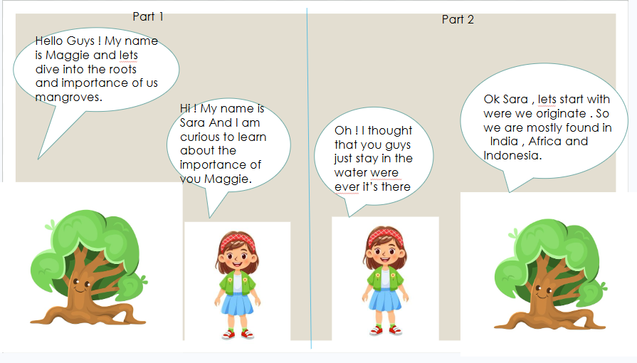
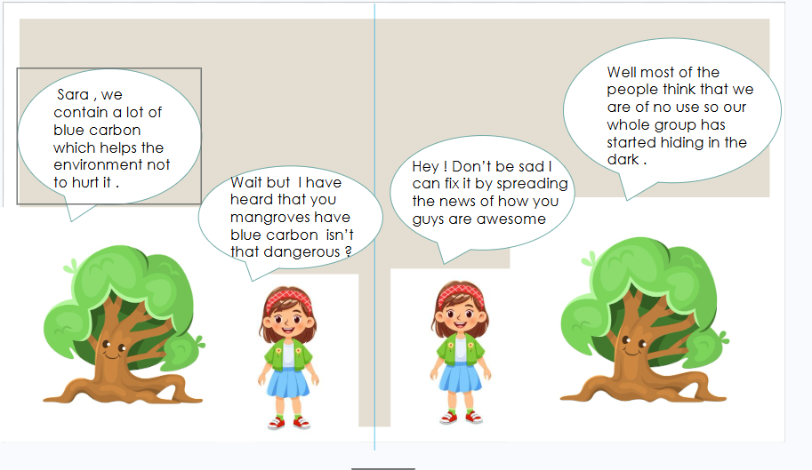
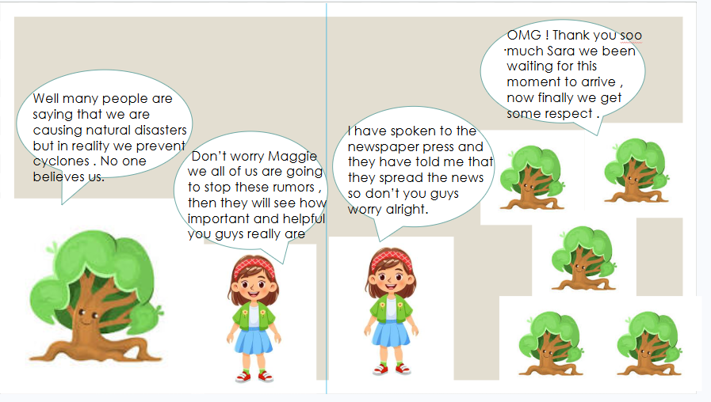
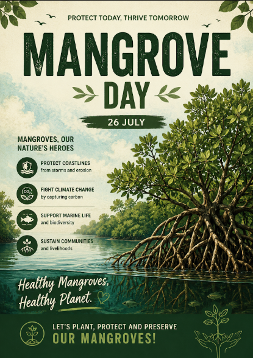
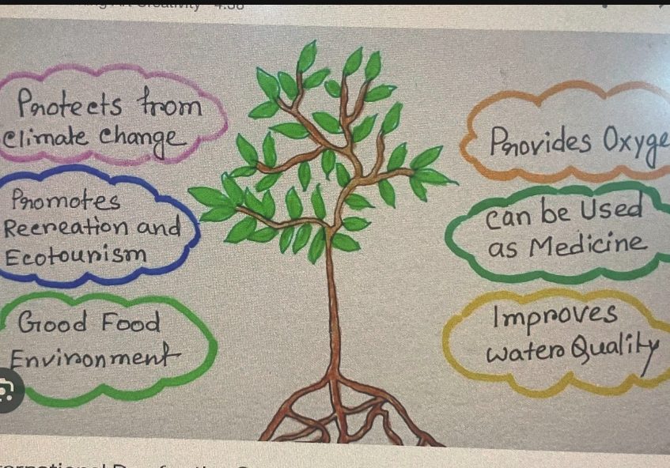
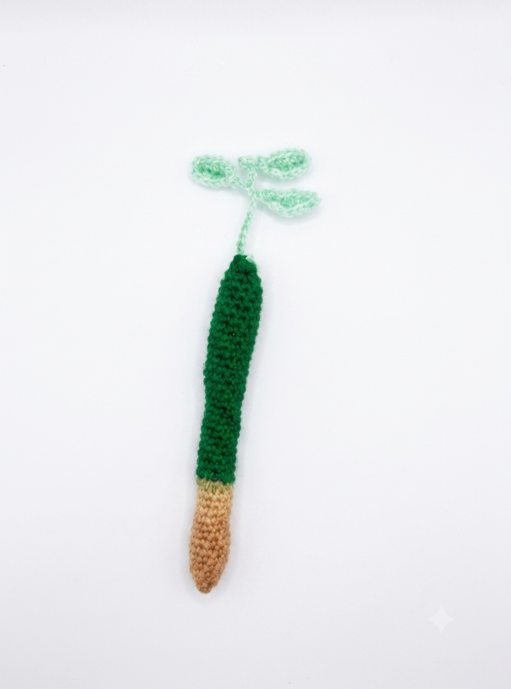
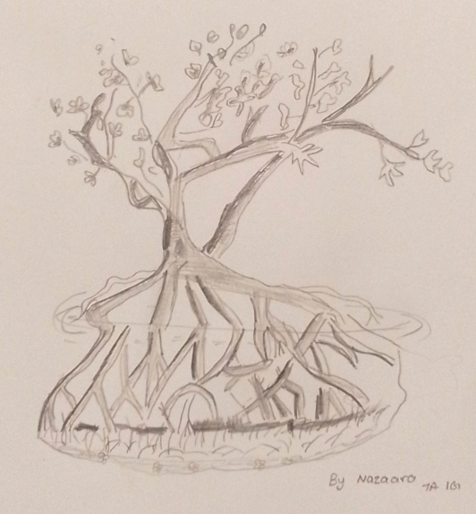

The Mangroves
A poem on saving mangrove trees By: Aahaan.
Mangroves stand where rivers meet the sea, a shield both strong and wise,
Their tangled roots protect the shores while countless living creatures rise.
They calm the waves, prevent erosion, and guard the land from storms; fierce might,
They store the Earths precious carbon, helping keep our future bright.
Yet forests fall to careless hands, and wildlife loses home each day;
Together we must plant, protect, and keep these green defenders safe always.
By saving mangroves now with love, we nurture oceans, life, and air,
For thriving mangroves mean a healthier world that every generation can share.
Akshaj : The mangrove heroes
On World Mangrove Day, our Grade 7 class went on a field trip to a mangrove forest near the coast. We were excited to learn about these unique trees. Our guide explained that mangroves protect the shoreline from strong waves and storms, provide shelter for fish, crabs, and birds, and help fight climate change by storing large amounts of carbon.
As we walked along the wooden bridge, we saw many different plants and animals living among the tangled roots. However, we also noticed plastic bottles, bags, and food wrappers caught in the trees. We felt sad because pollution was harming this beautiful habitat.
With our teacher's permission, we put on gloves and carefully collected the litter. We separated the waste into recyclable and non-recyclable bags. After a while, the mangrove forest looked much cleaner. The guide thanked us and reminded us that protecting nature begins with small actions.
Before returning to school, each of us planted a young mangrove sapling and promised to reduce plastic use, recycle more, and encourage our families and friends to care for the environment. That day, we learned that mangroves are not just trees—they are protectors of nature and our future.
From then on, our class proudly called ourselves the Mangrove Heroes, because we knew that even small efforts can make a big difference
After the cleanup, we planted young mangrove saplings in a safe place. Our guide told us that every tree we plant helps protect the coast and supports wildlife for many years. We felt proud to be part of something meaningful.
Before leaving, each student promised to reduce the use of plastic, recycle more, and encourage family and friends to protect nature. The trip taught us that everyone has a role in caring for the environment. We returned to school with happy hearts, knowing that even small actions can make a big difference. From that day on, our class proudly called ourselves the Mangrove Heroes, determined to protect our planet for future generations
Anchors of the coast by Taarunika
Between the changing tide and shore,
The mangrove thrives where oceans roar.
It drinks the brine with secret grace,
And blooms within a salty space .
With breathing roots that seek the air,
It stands robust against despair.
A living wall of green and wood,
That guards the coast where others stood.
From parent branch, the seedlings grow,
Prepared before they drop below.
To float away or pierce the mud,
And ride the rushing summer flood.
A nursery for the wild and small,
The strongest anchor of them all.
It holds the earth and tames the sea,
A monument of constancy.
kyra bagga mangrove day story
Long ago, near a beautiful seashore, a tiny mangrove sapling named Mino grew in the muddy ground. He was much smaller than the tall trees around him.
One day, Mino sighed, "I am so small. I cannot help anyone."
An old mangrove tree smiled and said, "Be patient. Every tree has an important job."
A few weeks later, dark clouds covered the sky. Strong winds blew, and huge waves rushed toward the shore. The animals were frightened.
The fish hid among the mangrove roots. Crabs burrowed into the mud. Birds rested safely on the branches.
Mino stretched his little roots as much as he could. Together with the other mangrove trees, he helped hold the soil in place.
After the storm, the village was safe. The people came to thank the mangrove forest.
A fisherman said, "These trees protected our homes from the strong waves."
Mino felt proud. Even though he was small, he had helped protect the shore.
From that day on, Mino understood that every mangrove tree, big or small, plays an important role in nature.
Moral: No contribution is too small when helping nature.
also by kaira bagga
By the sea, so strong and wide,
Mangrove trees stand side by side.
Their roots grow deep, their branches sway,
Protecting shores every day.
They give shelter to fish and crabs,
And help many birds build nests.
They clean the water, stop the tide,
Keeping nature safe with pride.
Mangroves fight against the storm,
Keeping beaches safe and warm.
They store carbon from the air,
Helping Earth with loving care.
On Mangrove Day, let's all agree,
To protect each mangrove tree.
For a greener, brighter way,
Let's save mangroves every day!
the swamp is watching by Laasya
I ignored the warning signs and paddled my kayak deep into the creepy coastal swamp after dark.My flashlight flickered, shining on a massive mangrove tree whose roots looked exactly like giant, creeping hands.I froze when I saw it—a grumpy, weathered face was molded right into the wooden trunk, staring straight at me with hollow eyes.Before I could even scream, the tangled roots actually moved, slowly stretching out to block my only escape route.Salty water dripped from its waxy leaves like sweat, splashing onto my face as the wooden giant hissed in the wind."No one leaves my swamp," a raspy voice whispered from the deep mud, vibrating right through my plastic kayak.I paddled frantically, but the wooden fingers clamped down on my blade, dragging me backward into the dark shadows.
Guardians of the coast by Pragya and Ahaana
Day by day, mangroves grow tall,
But day by day, we make them fall.
Protect the trees; they deserve much better,
There are many other ways to make a letter.
Mangrove roots unite as one,
Protecting coasts and helping a ton.
Sheltering fish, crabs, and shrimp,
They give us much, yet still we skimp.
Mangrove trees are nature’s treasure,
But we hurt them just for pleasure.
Trees like these are worth saving,
So let’s act before the world starts fading.
The Magic of Mangrove Trees by Sahasara
Mangrove trees stand strong by the sea,
A safe and happy home for you and me.
Their tangled roots hold the soil tight,
Protecting the shores day and night.
They shelter fish, birds, and crabs with care,
Giving many animals food to share.
They clean the air and keep waters clear,
Helping nature throughout the year.
Let's protect mangroves, both old and new,
For a greener Earth for me and you.
THE UNTOLD TALE by Sunaina
I, the mangrove, stand so old,
In slimy mud and water cold.
My spikey roots poke up to breathe,
While heavy shadows slowly creep.
I catch the dirt and trap the sand,
To stop the water eating land.
I block the giant crashing waves,
And hold the soil in muddy graves.
My tangled arms fight wind and storm,
To keep the houses safe and warm.
The fish and crabs hide in my vest,
Where baby animals can rest.
But people cut my branches down,
To build their roads and expand their town.
Then came a month they called July,
Beneath the stormy, and thunderous sky.
On World Mangrove Day, they understood,
How much they need this dark, wet wood.
Now children plant my seeds in slime,
To save me from the end of time.
Though I am gloomy, dark, and deep,
I am the shield they need to keep.
Guardians of the Coast by Thiya
At the edge where tides command,
Stand the mangroves, proud and grand.
Roots-like fingers, twisted deep,
Secrets of the shore they keep.
In salty water, still they grow,
Where other trees would never go.
They cradle fish, they shelter birds,
ask the tide — it knows their words.
They block the storms, they tame the wave,
Brave green walls the coastlines save.
They clean the water, trap the sand,
Silent heroes of the land.
Carbon keepers, breathing slow,
Fighting heat the world must know.
A nursery for the ocean’s young,
Where every life has just begun.
So on this day, let’s understand:
To save the sea, protect the land.
Plant a mangrove, guard its place —
For every root hold nature’s grace.
the Guard of the Coast by Varsha
Where the ocean meets the land,
Twisty mangrove trees will stand.
They have roots like long, thin legs,
Holding tight like wooden pegs.
Wading in the salty mud,
Standing through the rising flood.
They don't mind the splashing sea,
They are as brave as trees can be.
Hidden safe between their knees,
Baby fish swim with the breeze.
Crabs and snails go crawling by,
While the birds rest up on high.
When the stormy winds blow fast,
Mangroves hold the shoreline past.
They stop the waves from crashing down,
And protect our coastal town.
the Mangrove Dudes by Akshara



Moving On To The Pictures
a poster for mangroves by Kaira Bagga

a mangrove and its functions by Mahalakshmi

a crochet mangrove seed by Manickavali

a mangrove drawing by Nazara

The creator of this website is Tanush Pandey (tandash)
He codes for fun. Watching his classmates' poems, stories, and pictures was beautiful, and now he wants to share it with you!